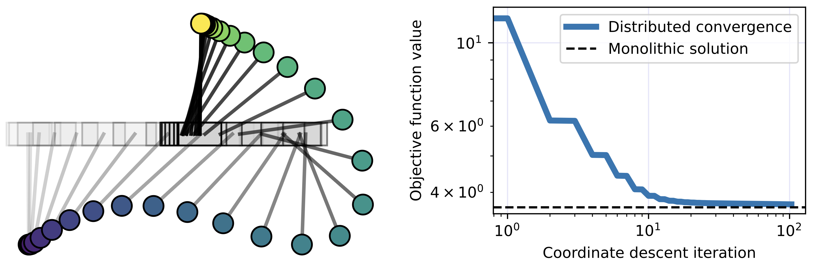
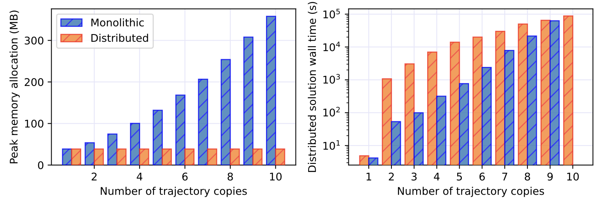
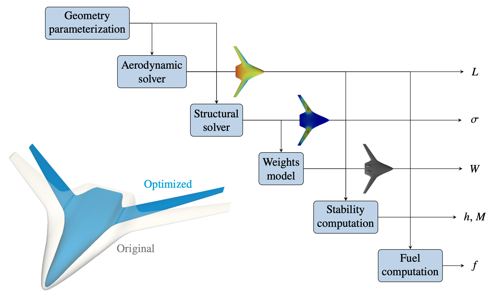
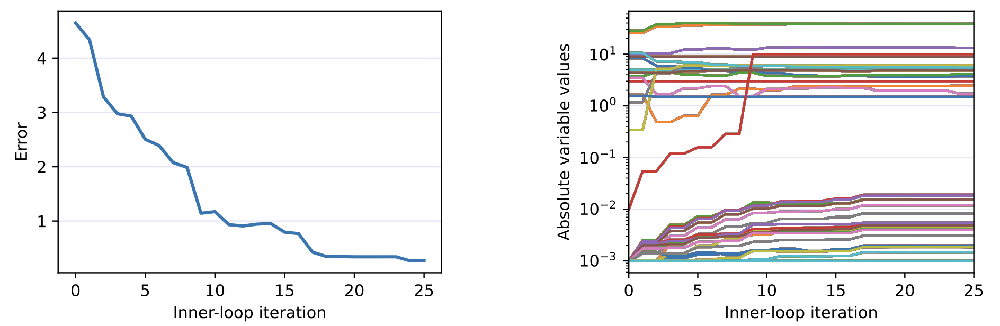

Provably convergent distributed optimization architectures
- Context
- Multidisciplinary design problems can be divided into smaller optimizations when memory limits or disciplinary boundaries prevent a monolithic solution.
- Gap
- Equivalent distributed formulations need not yield convergent algorithms, and constraints spanning several disciplines complicate subproblem coordination.
- Research goal
- Establish convergent distributed algorithms that enforce global constraints while keeping model evaluations within their assigned subproblems.
Selected studies
ReferencesRecovering system solutions from smaller subproblems
Block coordinate descent solves disciplinary subproblems sequentially without a system-level optimizer, with convergence to a stationary point proved for the unconstrained formulation under stated assumptions. Control co-design and aerostructural tests recover monolithic solutions; distributed warm starts improve convergence reliability in the aerostructural tests. Peak memory stays constant as cart-pole trajectory copies are added, while the monolithic formulation's memory grows.
Nicholas C. Orndorff, John T. Hwang. A Distributed Method for Solving Large-Scale Multidisciplinary Optimization Problems. AIAA AVIATION FORUM AND ASCEND 2025, 2025.
@inproceedings{orndorff2025distributed,
author = {Nicholas C. Orndorff and John T. Hwang},
title = {A Distributed Method for Solving Large-Scale Multidisciplinary Optimization Problems},
booktitle = {AIAA AVIATION FORUM AND ASCEND 2025},
year = {2025},
doi = {10.2514/6.2025-3736},
url = {https://doi.org/10.2514/6.2025-3736},
note = {Metadata verification: Crossref title}
}



Satisfying constraints across disciplinary boundaries
An augmented Lagrangian enforces global and consensus constraints without driving penalty coefficients to infinity. Copies of shared variables and intermediate quantities let each subproblem evaluate only its own models. An aerostructural test converges, while the more expensive blended-wing-body run demonstrates decreasing solution error without reaching tight convergence.
Nicholas C. Orndorff, Christopher Lupp, John T. Hwang. A Distributed Algorithm for Large-Scale Multidisciplinary Design Optimization With Global Constraints. AIAA AVIATION 2026 Forum, 2026. Distribution Statement A: Approved for public release; distribution is unlimited. PA# AFRL-2026-2045
@inproceedings{orndorff2026distributed,
author = {Nicholas C. Orndorff and Christopher Lupp and John T. Hwang},
title = {A Distributed Algorithm for Large-Scale Multidisciplinary Design Optimization With Global Constraints},
booktitle = {AIAA AVIATION 2026 Forum},
year = {2026},
doi = {10.2514/6.2026-4500},
url = {https://doi.org/10.2514/6.2026-4500},
note = {Metadata verification: Crossref title}
}



References
- Nicholas C. Orndorff, John T. Hwang. A Distributed Method for Solving Large-Scale Multidisciplinary Optimization Problems. AIAA AVIATION FORUM AND ASCEND 2025, 2025.DOIPDF
@inproceedings{orndorff2025distributed, author = {Nicholas C. Orndorff and John T. Hwang}, title = {A Distributed Method for Solving Large-Scale Multidisciplinary Optimization Problems}, booktitle = {AIAA AVIATION FORUM AND ASCEND 2025}, year = {2025}, doi = {10.2514/6.2025-3736}, url = {https://doi.org/10.2514/6.2025-3736}, note = {Metadata verification: Crossref title} } - Nicholas C. Orndorff, Christopher Lupp, John T. Hwang. A Distributed Algorithm for Large-Scale Multidisciplinary Design Optimization With Global Constraints. AIAA AVIATION 2026 Forum, 2026. Distribution Statement A: Approved for public release; distribution is unlimited. PA# AFRL-2026-2045DOIPDF
@inproceedings{orndorff2026distributed, author = {Nicholas C. Orndorff and Christopher Lupp and John T. Hwang}, title = {A Distributed Algorithm for Large-Scale Multidisciplinary Design Optimization With Global Constraints}, booktitle = {AIAA AVIATION 2026 Forum}, year = {2026}, doi = {10.2514/6.2026-4500}, url = {https://doi.org/10.2514/6.2026-4500}, note = {Metadata verification: Crossref title} } - Sebastiaan P. van Schie, Marius L. Ruh, Andrew H. Fletcher, Michael Warner, Mark Sperry, Luca Scotzniovsky, Nicholas C. Orndorff, Ru Xiang, Jiayao Yan, Han Zhao, Joshua Krokowski, Jiun-Shyan Chen, Darshan Sarojini, Hyunjune Gill, Seongkyu Lee, Andrew C. Tagg, Ryan Anderson, Eric Green, Cibin Joseph, Andrew Ning, Zeyu Cheng, Zhi Cao, Chunting Mi, Alexandre T. Guibert, Ashley Cronk, Alicia A. Kim, Shirley Meng, Christopher Silva, John T. Hwang. Large-Scale Distributed Multidisciplinary Design Optimization of the NASA Lift-Plus-Cruise Air Taxi Concept. AIAA SCITECH 2025 Forum, 2025.DOIPDF
@inproceedings{vanschie2025large, author = {Sebastiaan P. van Schie and Marius L. Ruh and Andrew H. Fletcher and Michael Warner and Mark Sperry and Luca Scotzniovsky and Nicholas C. Orndorff and Ru Xiang and Jiayao Yan and Han Zhao and Joshua Krokowski and Jiun-Shyan Chen and Darshan Sarojini and Hyunjune Gill and Seongkyu Lee and Andrew C. Tagg and Ryan Anderson and Eric Green and Cibin Joseph and Andrew Ning and Zeyu Cheng and Zhi Cao and Chunting Mi and Alexandre T. Guibert and Ashley Cronk and Alicia A. Kim and Shirley Meng and Christopher Silva and John T. Hwang}, title = {Large-Scale Distributed Multidisciplinary Design Optimization of the NASA Lift-Plus-Cruise Air Taxi Concept}, booktitle = {AIAA SCITECH 2025 Forum}, year = {2025}, doi = {10.2514/6.2025-0362}, url = {https://doi.org/10.2514/6.2025-0362}, note = {Metadata verification: Crossref title} }
Research connections